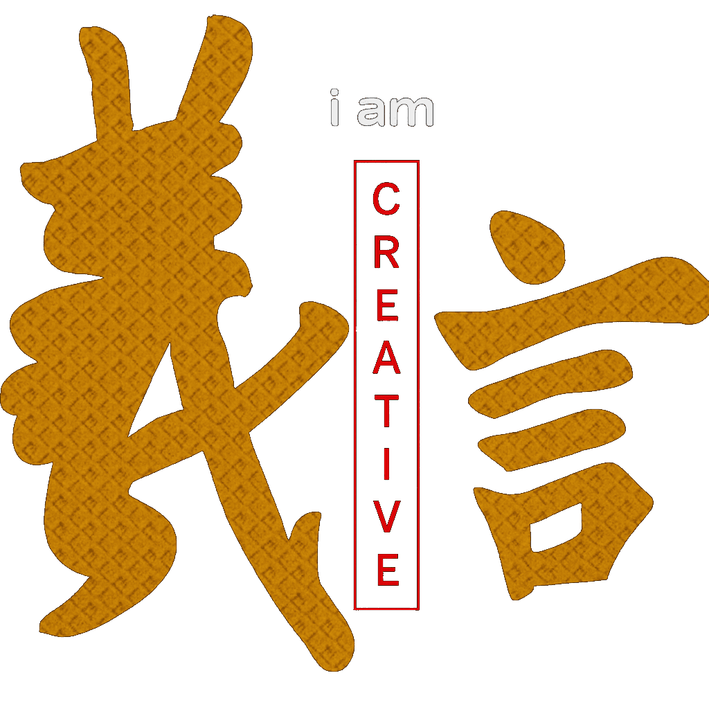

Fondateur de The Project

InDesign, Photoshop & Illustrator sont mes logiciels de prédilection.
Spécialisé dans le montage vidéo sur le Brand Content.
Directeur Créatif et Producer de jeux vidéo indépendants.
Producer & Directeur Créatif de jeux vidéo indépendants — retrouvez mes projets créatifs sur une page dédiée.
Explorer